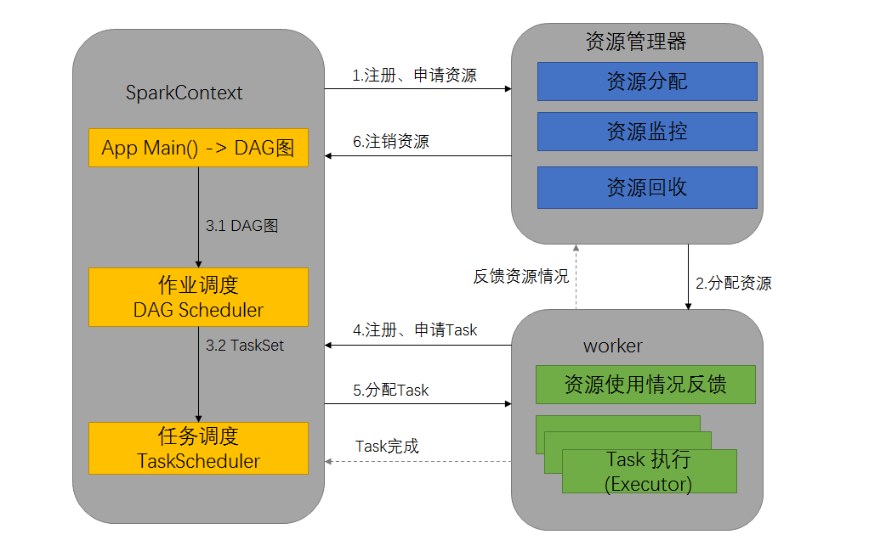

Ch03-Spark 之 Job 执行流程
May 12, 2019
Spark Job 执行流程。
1. 执行流程 #
- 构建 Spark Application 的运行环境，启动 SparkContext
- SparkContext 向资源管理器（可以是 Standalone，Mesos，Yarn）申请运行 Executor 资源
- SparkContext 将应用程序分发给 Executor
- SparkContext 构建成 DAG 图，将 DAG 图分解成 Stage、将 Taskset 发送给 Task Scheduler，最后由 Task Scheduler 将 Task 发送给 Executor 运行
- Task 在 Executor 上运行，运行完释放所有资源

这张图不是非常准确
- DAGScheduler 输入 DAG，输出 Stage
- TaskScheduler 输入 Stage，输出 TaskSet
- TaskSetManager 输入 TaskSet，输出若干 Task
2. 其他细节 #
2.1 划分依据 #
- Job 划分依据是 Action 算子
- Stage 划分依据是 RDD 宽窄依赖
- Task 划分是依据 RDD 的分区数（并行度）
2.2 划分算法 #
核心算法是回溯算法，从后往前回溯/反向解析，遇到窄依赖加入本 Stage，遇见宽依赖进行 Stage 切分。
Spark 内核会从触发 Action 操作的那个 RDD 开始从后往前推，首先会为最后一个 RDD 创建一个 Stage，然后继续倒推，如果发现对某个 RDD 是宽依赖，那么就会将宽依赖的那个 RDD 创建一个新的 Stage，那个 RDD 就是新的 Stage 的最后一个 RDD。然后依次类推，继续倒推，根据窄依赖或者宽依赖进行 Stage 的划分，直到所有的 RDD 全部遍历完成为止。
2.3 监控 #
DAGScheduler 监控 Job，Task 的运行状态以及 Executor 的生命状态。
2.4 结果返回 #
一个具体的任务在 Executor 中执行完毕后，其结果需要以某种形式返回给 DAGScheduler，根据任务类型的不同，任务结果的返回方式也不同。
- 对于 FinalStage 所对应的任务，返回给 DAGScheduler 的是运算结果本身；
- 对于 中间调度阶段对应的任务 ShuffleMapTask，返回给 DAGScheduler 的是一个 MapStatus 里的相关存储信息，而非结果本身，这些存储位置信息将作为下一个调度阶段的任务获取输入数据的依据。